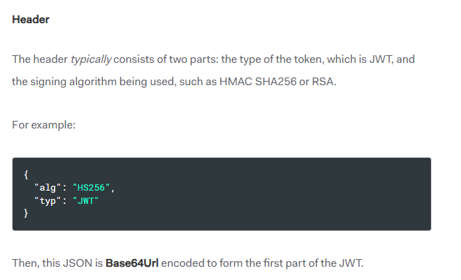
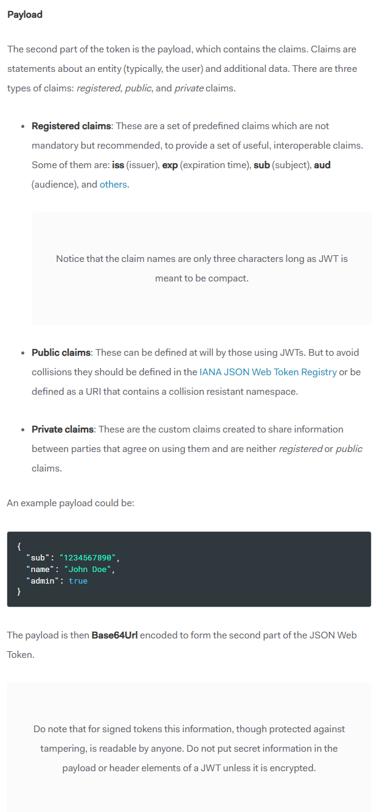
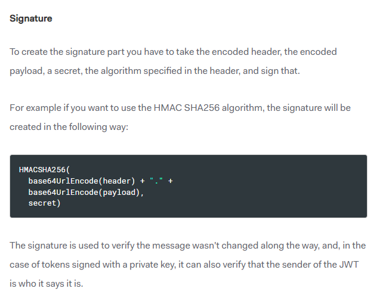
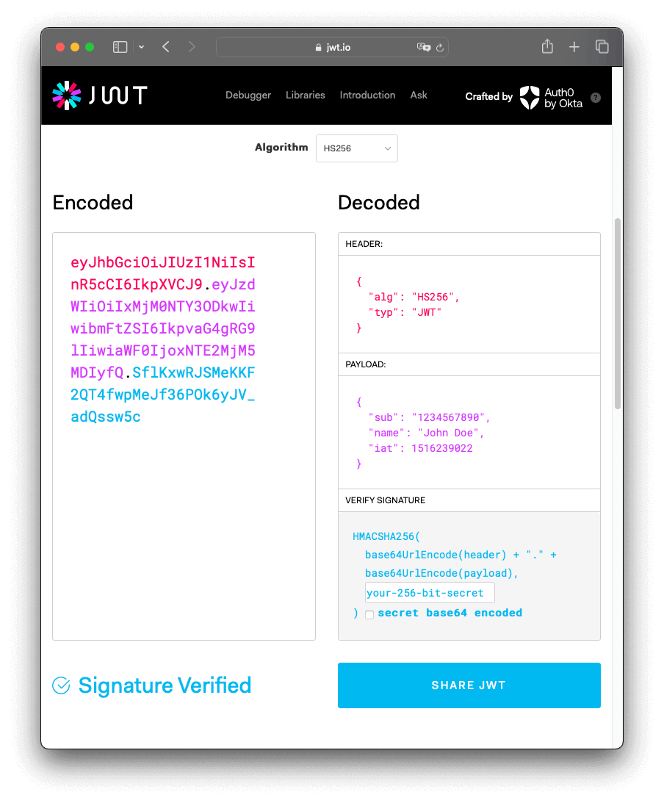

Hello, any and all! I hope your day has been going well, but if it hasn't, I hope it improves with time! Don't forget to take a break or focus on yourself, if needed.
In this post, I will be going over JSON Web tokens along with its role in authentication. This means I'll be covering a brief summary on how the sign-up and login process functions when using JSON Web tokens. It's important to know that there are also other ways to authenticate a user, this is just one of many ways that I personally find to be one of the simpler ones.
From the JWT website, "JSON Web Tokens are an open, industry standard RFC 7519 method for representing claims securely between two parties." In essence, it's a way to communicate sensitive information between two points. As the name suggests, is it information that is stored in JSON. This object is then encoded into a series of characters and numbers that can later be decoded by the receiving end.
As described as part of the JWT intro, A JWT is composed of three parts, typically shown in this format:
xxxxxx.yyyyyy.zzzzzz



Something to note from the signature where it says "secret", this can be any string that a person wishes to make. I like to think of it like a password; if someone knows what this secret word is, they can use use it to potentially decode any JWTs that you're generating.

The Encoded side on the left is the token that is shared between parties. The Decoded side on the right are all of the individual pieces used together to create the token itself.
One of the more common use cases of JWTs is to authenticate a user with this encoded string. Let's say you have a system to store users. You send your information to the system, usually something like an email or username along with a password that's tied to it. Assuming the input is valid, this new user is created and you receive a token in return. With this token, you can now access the rest of the website's services. Similar to a social media site's system, like Facebook, Twitter/X or Instragram, once you sign up or login, you use your username/email and password to then make posts, upload images, bookmark other posts, etc. This token is basically an encrypted ID that is sent to the server to let them know that you are an allowed user and it can determine what resources to share with you.
JWTs are one of the more simpler approaches to sending encoded, sensitive information along the web. With this in mind, it's possible to create a safer user system for one's own purposes, whether it's for a personal blog or just selling a service. You can be confident that the information sent between these two points will be safe and guaranteed to be from the desired source.
As always, for any and all who read through this, I very much appreciate the you've spent here! I hope that with this, more knowledge is gained to utilize for your own purposes. I know it's given me a good idea on how to potentially implement a user system on a side project I've been working on. Take care, and happy coding!